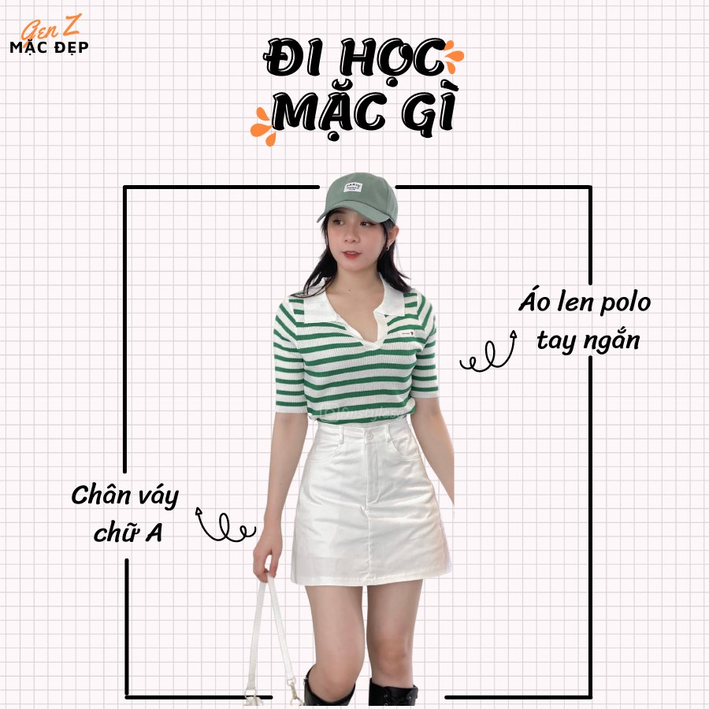

Đi học mặc gì?
Admin 22/11/2021
Thời điểm kết thúc lớp 12 cũng chính là lúc chúng ta tạm biệt người bạn “áo đồng phục” để bắt đầu cho sự tự do lựa chọn phong cách mặc đồ đi học.
Nhưng nếu không muốn mỗi buổi sáng đều phải đắn đo suy nghĩ nên mặc gì trước khi tới giảng đường thì bạn hãy ghim ngay 5 tips "Đi học mặc gì ?" dưới đây nhé!
1. Jean ống rộng + áo len
Nếu bạn muốn làm mới tủ đồ đi học của mình để phù hợp hơn với môi trường đại học, một chiếc quần jeans là item không thể nào bỏ qua khi mua sắm. Khi kết hợp len sẽ tạ ra nét thanh lịch.
2. Chân váy + áo thun
Nếu trước đây bạn không dám mặc chân váy khi đến trường thì giờ đây nó chắc chắn sẽ là đứa con cưng trong tủ đồ lên giảng đường của bạn. Set đồ chân váy kết hợp với áo thun trên chắc chắn sẽ giúp bạn trông nổi bật hơn ở lớp.
3.Đầm Polo + túi tone
Đây chác chắn là set đồ đơn giản nhất mà bạn cần có. Tuy không cầu kì nhưng chắc chắn sẽ giúp bạn trở thành cô nàng sinh viên vô cùng năng động
4. Quần short + áo babydoll
Nhắc tới quần short thì chắc hẳn không chị em nào không có trong tủ đồ của mình. Kết hợp với áo babydoll sẽ làm bạn trông đáng yêu hơn đấy
5. Chân váy tennis + áo gile + áo sơ mi

Chân váy tennis là 1 món đồ không thể thiếu cho các nàng. Khi kết hợp với áo gile và sơ mi thì bạn đã có cho mình 1 set đồ đi học mùa thu đông vô cùng xinh xẻo.
6. Jean ống loe + Áo Croptop
Vài năm trở lại đây, cách phối đồ với quần jean và áo croptop giúp thon gọn và ăn gian chiều cao một lần nữa lại tiếp tục làm mưa làm gió trong giới thời trang.Các bạn trẻ đều mê mẩn item thần thánh này.7. Chân váy chữ A
Những chiếc áo đơn giản khi kết hợp cùng với chân váy ngắn chữ A mang vẻ đẹp vừa kín đáo, quyến rũ mà không mất đi vẻ trẻ trung, năng động